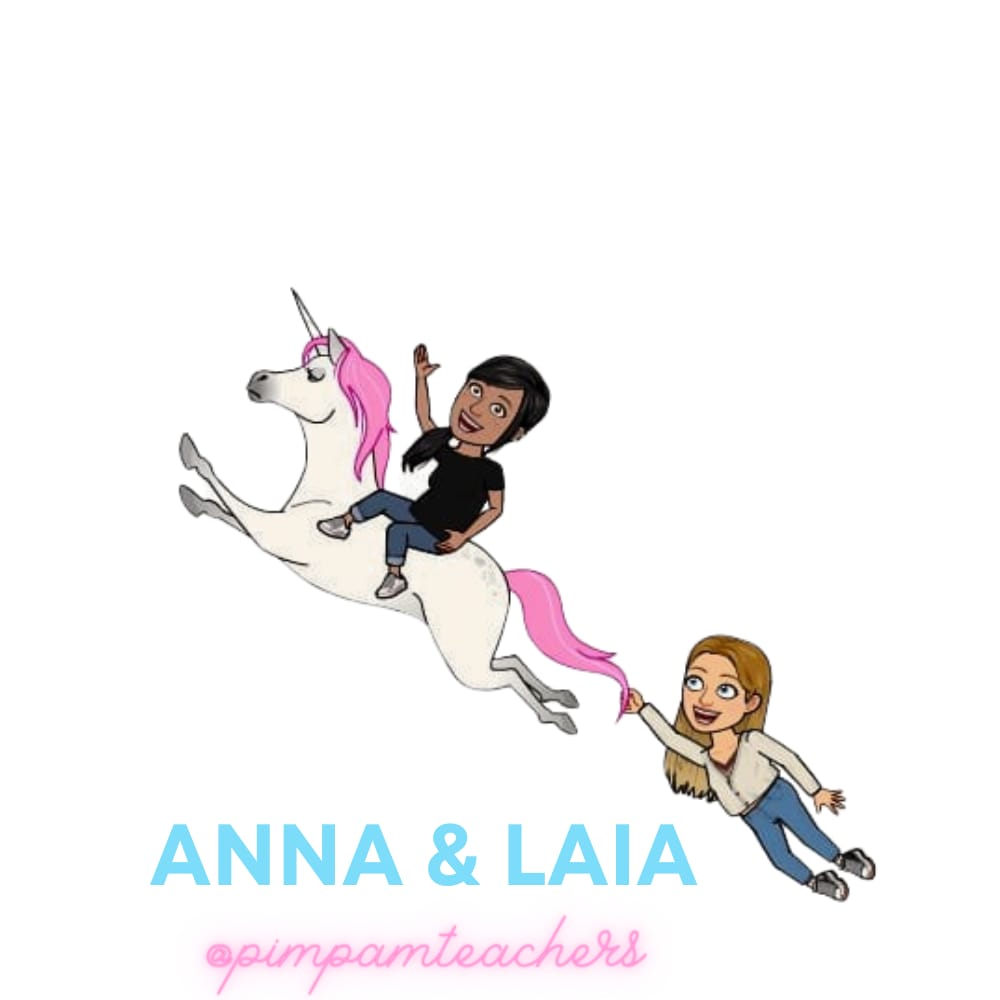

Formación útil
Sesiones claras y aplicadas para aterrizar currículo, evaluación y diseño didáctico sin jerga innecesaria.
Acompañamos a equipos docentes, coordinaciones y centros que necesitan convertir currículo, evaluación y situaciones de aprendizaje en decisiones comprensibles, compartidas y aplicables.

No prometemos fórmulas mágicas. Diseñamos formación y materiales que ayudan a tomar mejores decisiones pedagógicas y a sostenerlas en el tiempo.
Sesiones claras y aplicadas para aterrizar currículo, evaluación y diseño didáctico sin jerga innecesaria.
Ordenamos procesos, priorizamos pasos y ayudamos a que el equipo comparta lenguaje y foco.
Infografías, plantillas y recursos que facilitan la comprensión, la comunicación interna y la continuidad.
Adaptamos cada propuesta al momento del centro, al nivel del equipo y a los objetivos que necesitáis priorizar.
Buscamos que cada sesión deje herramientas claras para seguir trabajando después, no solo una buena impresión.
Traducimos conceptos complejos a marcos visuales y decisiones prácticas que ayudan a avanzar con calma.